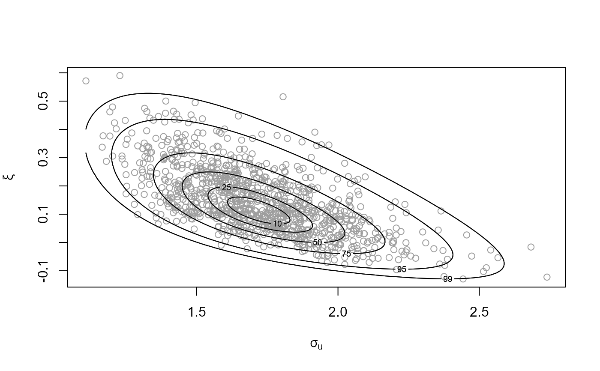
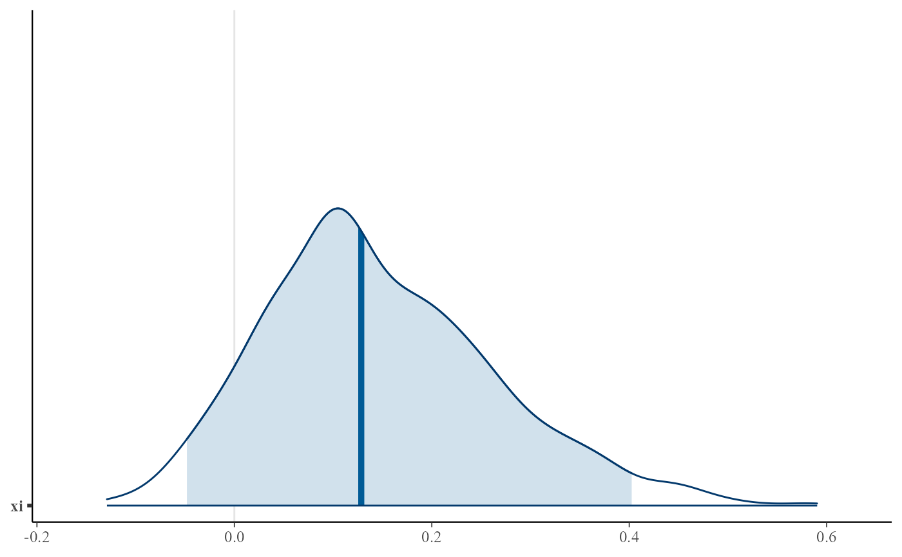
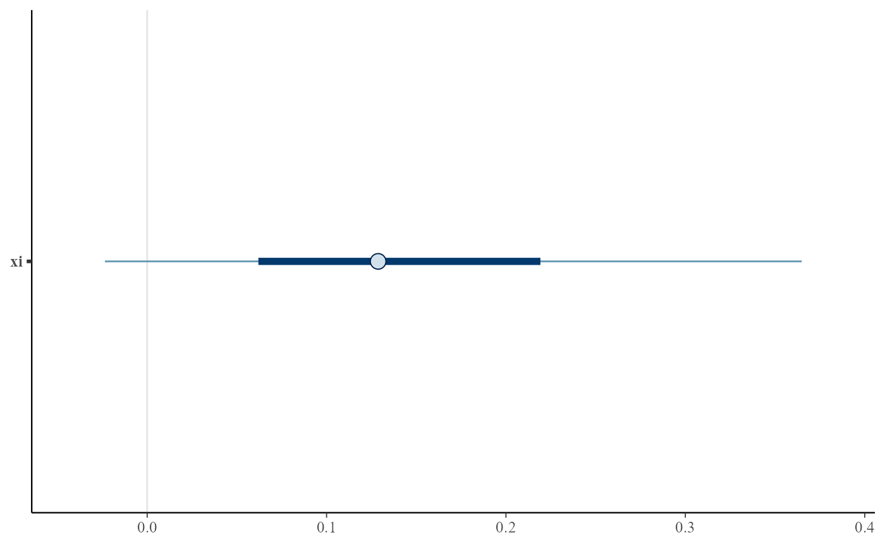
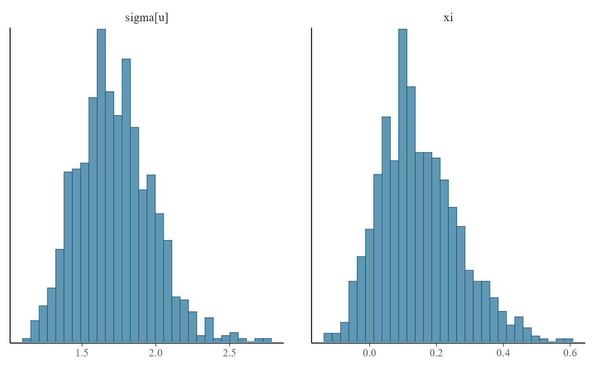
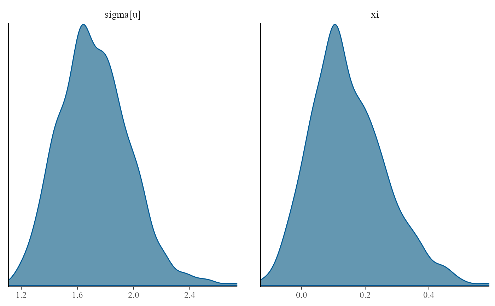
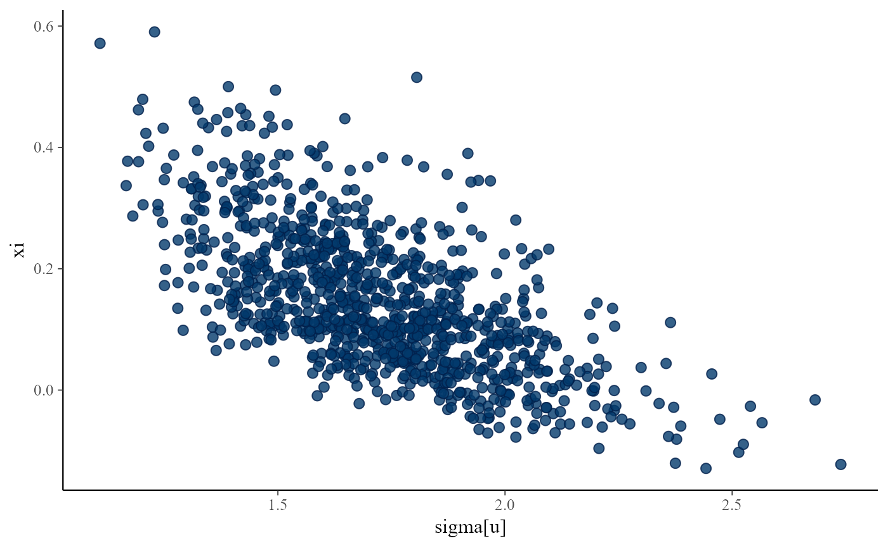
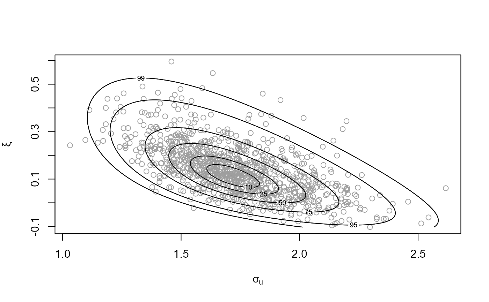
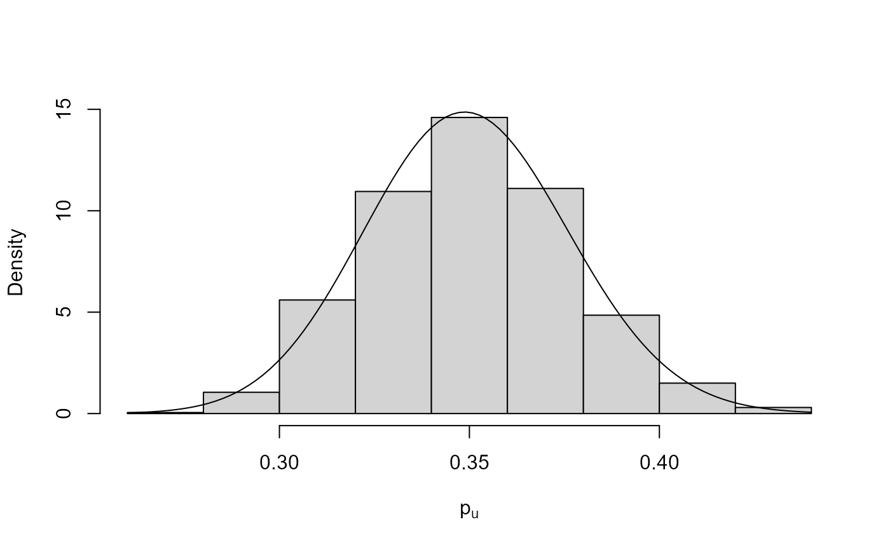
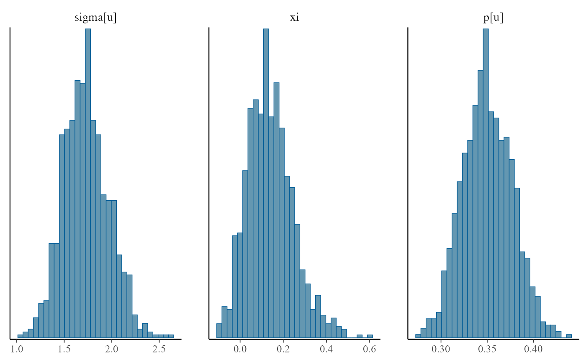
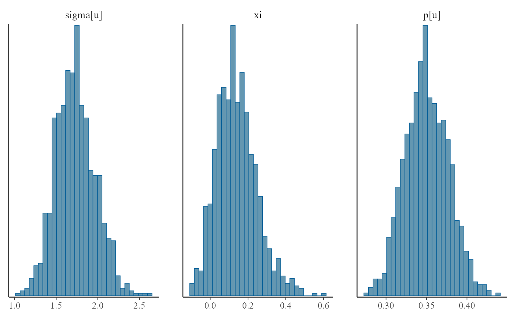

plot method for class "evpost". For d = 1 a histogram of the
simulated values is plotted with a the density function superimposed.
The density is normalized crudely using the trapezium rule. For
d = 2 a scatter plot of the simulated values is produced with
density contours superimposed. For d > 2 pairwise plots of the
simulated values are produced.
An interface is also provided to the functions in the bayesplot
package that produce plots of Markov chain Monte Carlo (MCMC)
simulations. See MCMC-overview for details of these
functions.
# S3 method for evpost
plot(
x,
y,
...,
n = ifelse(x$d == 1, 1001, 101),
prob = c(0.5, 0.1, 0.25, 0.75, 0.95, 0.99),
ru_scale = FALSE,
rows = NULL,
xlabs = NULL,
ylabs = NULL,
points_par = list(col = 8),
pu_only = FALSE,
add_pu = FALSE,
use_bayesplot = FALSE,
fun_name = c("areas", "intervals", "dens", "hist", "scatter")
)Arguments
- x
An object of class "evpost", a result of a call to
rpostorrpost_rcpp.- y
Not used.
- ...
Additional arguments passed on to
hist,lines,contour,pointsor functions from the bayesplot package.- n
A numeric scalar. Only relevant if
x$d = 1orx$d = 2. The meaning depends on the value of x$d.For d = 1 : n + 1 is the number of abscissae in the trapezium method used to normalize the density.
For d = 2 : an n by n regular grid is used to contour the density.
- prob
Numeric vector. Only relevant for d = 2. The contour lines are drawn such that the respective probabilities that the variable lies within the contour are approximately prob.
- ru_scale
A logical scalar. Should we plot data and density on the scale used in the ratio-of-uniforms algorithm (TRUE) or on the original scale (FALSE)?
- rows
A numeric scalar. When
d> 2 this sets the number of rows of plots. If the user doesn't provide this then it is set internally.- xlabs, ylabs
Numeric vectors. When
d> 2 these set the labels on the x and y axes respectively. If the user doesn't provide these then the column names of the simulated data matrix to be plotted are used.- points_par
A list of arguments to pass to
pointsto control the appearance of points depicting the simulated values. Only relevant whend = 2.- pu_only
Only produce a plot relating to the posterior distribution for the threshold exceedance probability \(p\). Only relevant when
model == "bingp"was used in the call torpostorrpost_rcpp.- add_pu
Before producing the plots add the threshold exceedance probability \(p\) to the parameters of the extreme value model. Only relevant when
model == "bingp"was used in the call torpostorrpost_rcpp.- use_bayesplot
A logical scalar. If
TRUEthe bayesplot function indicated byfun_nameis called. In principle any bayesplot function (that starts withmcmc_) can be called but this may not always be successful because, for example, some of the bayesplot functions work only with multiple MCMC simulations.- fun_name
A character scalar. The name of the bayesplot function, with the initial
mcmc_part removed. See MCMC-overview and links therein for the names of these functions. Some examples are given below.
Value
Nothing is returned unless use_bayesplot = TRUE when a
ggplot object, which can be further customized using the
ggplot2 package, is returned.
Details
For details of the bayesplot functions available when
use_bayesplot = TRUE see MCMC-overview and
the bayesplot vignette
Plotting MCMC draws.
References
Jonah Gabry (2016). bayesplot: Plotting for Bayesian Models. R package version 1.1.0. https://CRAN.R-project.org/package=bayesplot
See also
summary.evpost for summaries of the simulated values
and properties of the ratio-of-uniforms algorithm.
Examples
## GP posterior
data(gom)
u <- stats::quantile(gom, probs = 0.65)
fp <- set_prior(prior = "flat", model = "gp", min_xi = -1)
gpg <- rpost(n = 1000, model = "gp", prior = fp, thresh = u, data = gom)
plot(gpg)

# \donttest{
# Using the bayesplot package
plot(gpg, use_bayesplot = TRUE)
plot(gpg, use_bayesplot = TRUE, pars = "xi", prob = 0.95)

plot(gpg, use_bayesplot = TRUE, fun_name = "intervals", pars = "xi")

plot(gpg, use_bayesplot = TRUE, fun_name = "hist")
#> `stat_bin()` using `bins = 30`. Pick better value with `binwidth`.

plot(gpg, use_bayesplot = TRUE, fun_name = "dens")

plot(gpg, use_bayesplot = TRUE, fun_name = "scatter")

# }
## bin-GP posterior
data(gom)
u <- quantile(gom, probs = 0.65)
fp <- set_prior(prior = "flat", model = "gp", min_xi = -1)
bp <- set_bin_prior(prior = "jeffreys")
npy_gom <- length(gom)/105
bgpg <- rpost(n = 1000, model = "bingp", prior = fp, thresh = u,
data = gom, bin_prior = bp, npy = npy_gom)
plot(bgpg)

plot(bgpg, pu_only = TRUE)

plot(bgpg, add_pu = TRUE)
# \donttest{
# Using the bayesplot package
dimnames(bgpg$bin_sim_vals)
#> [[1]]
#> NULL
#>
#> [[2]]
#> [1] "p[u]"
#>
plot(bgpg, use_bayesplot = TRUE)
 plot(bgpg, use_bayesplot = TRUE, fun_name = "hist")
#> `stat_bin()` using `bins = 30`. Pick better value with `binwidth`.

plot(bgpg, use_bayesplot = TRUE, pars = "p[u]")
plot(bgpg, use_bayesplot = TRUE, fun_name = "hist")
#> `stat_bin()` using `bins = 30`. Pick better value with `binwidth`.

plot(bgpg, use_bayesplot = TRUE, pars = "p[u]")
 # }
# }